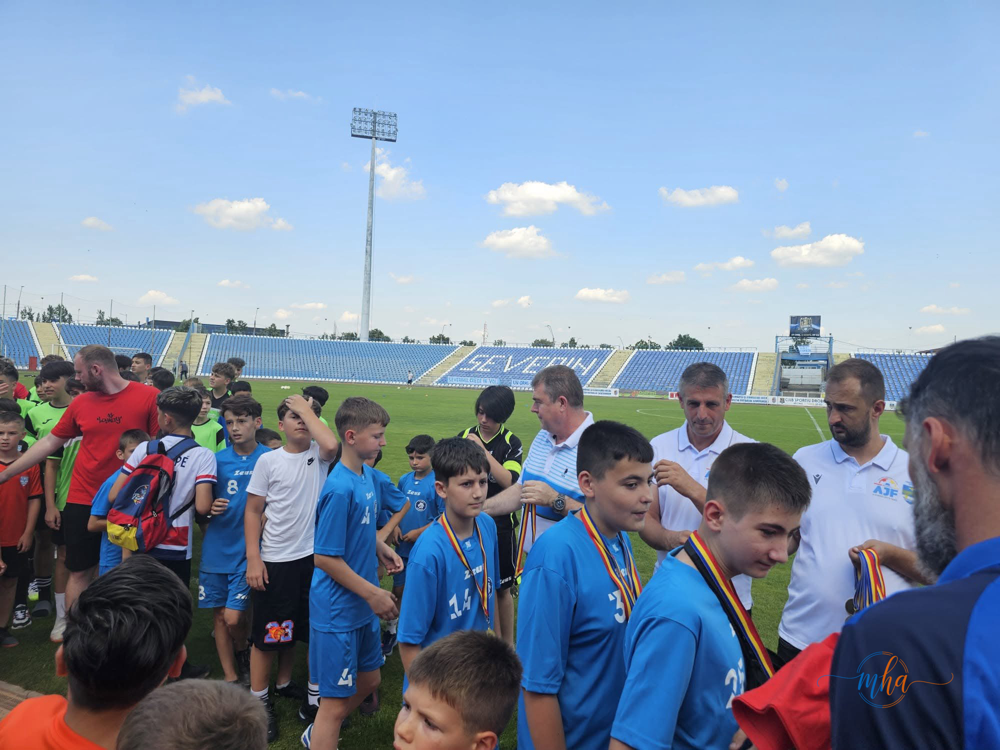
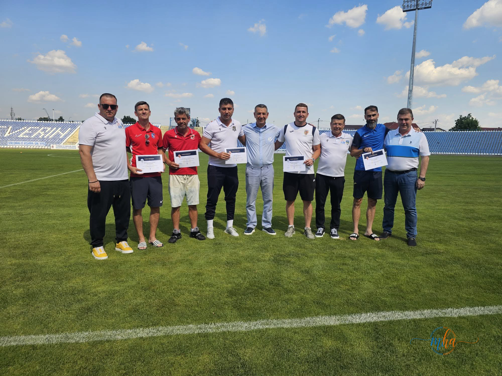
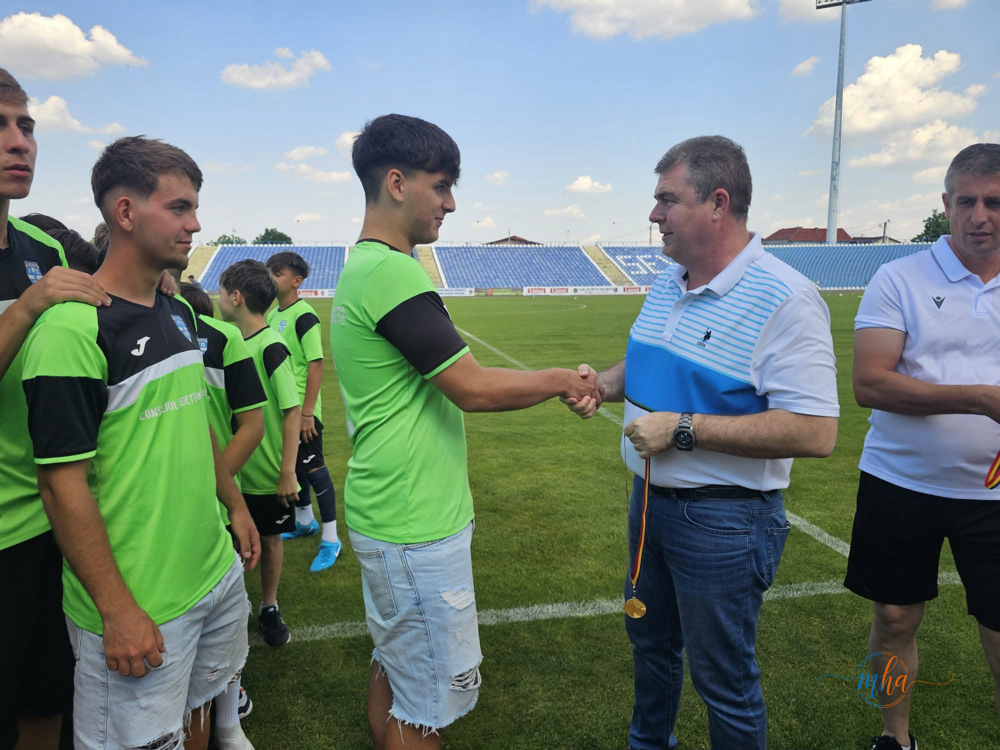
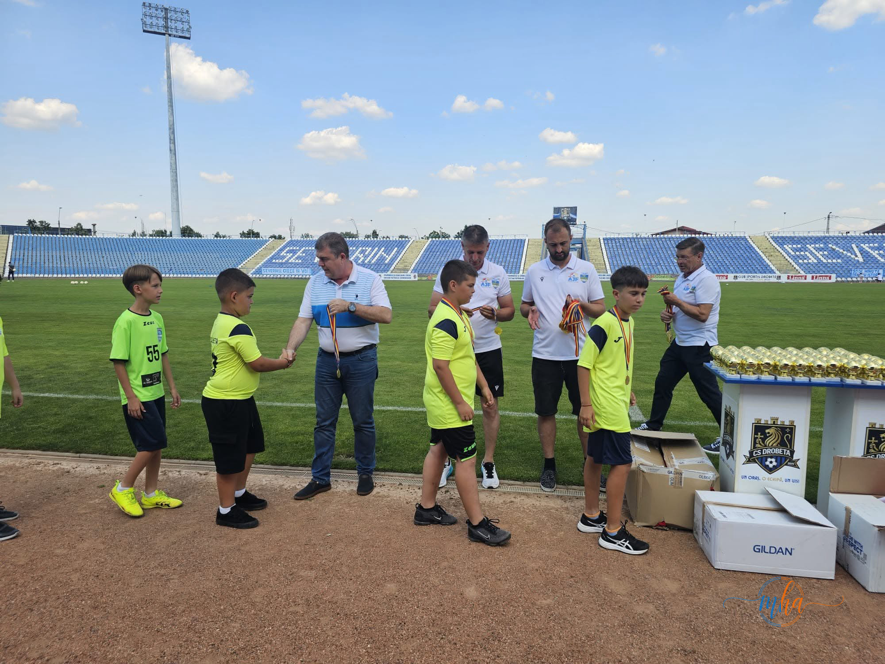
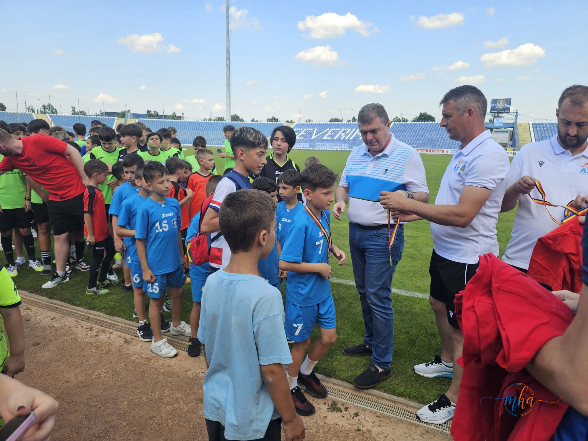
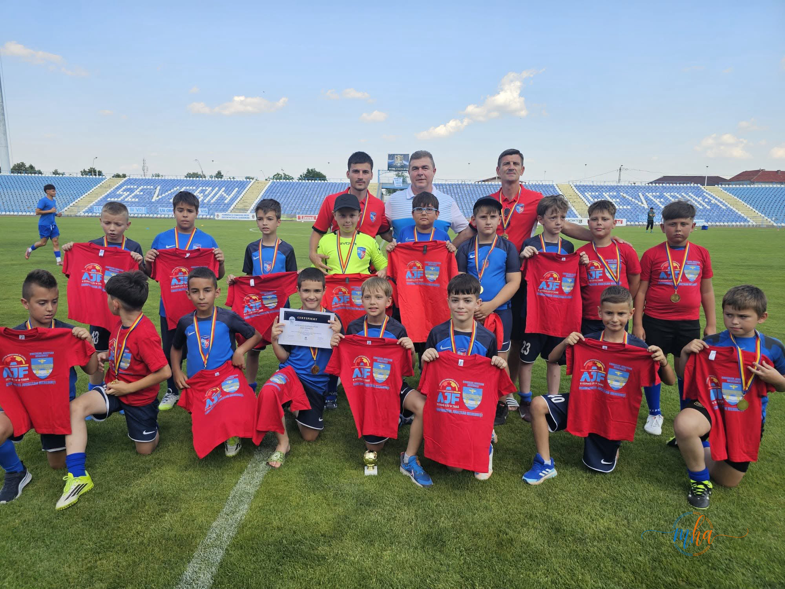

În weekend, Stadionul Municipal din Drobeta-Turnu Severin a fost gazda unei festivități dedicate celor mai tineri practicanți ai fotbalului din județ. Înaintea returului meciului de baraj pentru promovarea în Liga a III-a dintre SC Drobeta Turnu Severin și CS Sânandrei Timiș, aproape 600 de copii și juniori legitimați la cluburile afiliate Asociației Județene de Fotbal Mehedinți au fost premiați pentru implicarea, pasiunea și rezultatele obținute.
⚽ Festivitate premii — AJF Mehedinți, Iunie 2026
| Data | Weekend, Iunie 2026 |
| Locul | Stadionul Municipal, Drobeta-Turnu Severin |
| Organizator | Asociația Județeană de Fotbal Mehedinți |
| Premiați | ~600 copii și juniori |
| Context | Înaintea meciului de baraj SC Drobeta – CS Sânandrei Timiș |
| Competiție | Baraj promovare Liga a III-a |
O sărbătoare a fotbalului mehedințean
Evenimentul, organizat de Asociația Județeană de Fotbal Mehedinți, a reunit copii, părinți, antrenori și oficialități locale, într-o atmosferă de sărbătoare dedicată viitorului fotbalului mehedințean. Tinerii sportivi au primit diplome și aplauzele celor prezenți, ca o recunoaștere a efortului depus pe terenurile de antrenament și în competițiile desfășurate de-a lungul sezonului.

Tinerii jucători, aliniați pe gazonul Stadionului Municipal pentru a primi diplomele câștigate în sezonul competițional.
Sprijinul autorităților pentru sportul de masă
Reprezentanții autorităților județene au transmis că sprijinirea sportului de masă și a performanței în rândul copiilor și juniorilor rămâne o prioritate, subliniind că investiția în noile generații înseamnă investiție în viitorul comunității.

Momentul festivității a adus pe gazonul stadionului sute de tineri sportivi, alături de antrenorii și părinții lor.

Diplomele au fost înmânate în fața a sute de spectatori, într-o atmosferă de adevărată sărbătoare a fotbalului de masă.
Performanța începe de la baza piramidei sportive
Momentul festiv a precedat partida decisivă pentru promovarea în Liga a III-a, oferind un exemplu concret că fotbalul mehedințean își construiește viitorul pornind de la baza piramidei sportive. Organizatorii au evidențiat faptul că performanța se formează încă din primii ani de pregătire, prin disciplină, perseverență și pasiune.

Antrenorii au primit, la rândul lor, aprecieri pentru munca depusă în formarea tinerilor jucători din județul Mehedinți.

Viitorii fotbaliști ai Mehedințiului, în echipament sportiv, au invadat gazonul Stadionului Municipal într-un moment de neuitat.
Generații promițătoare pentru fotbalul mehedințean
La finalul ceremoniei, copiii și juniorii premiați au fost felicitați pentru rezultatele obținute, iar antrenorii și părinții au primit, la rândul lor, aprecieri pentru sprijinul oferit tinerilor sportivi în drumul lor către performanță.

Atmosfera de pe Stadionul Municipal a demonstrat că fotbalul mehedințean are o bază solidă și generații promițătoare.
Atmosfera de pe Stadionul Municipal a demonstrat încă o dată că fotbalul mehedințean are o bază solidă și generații promițătoare care pot reprezenta cu succes județul în anii următori.
Fotbalul mehedințean își construiește viitorul pornind de la baza piramidei sportive — prin disciplină, perseverență și pasiune, cultivate încă din primii ani de pregătire.